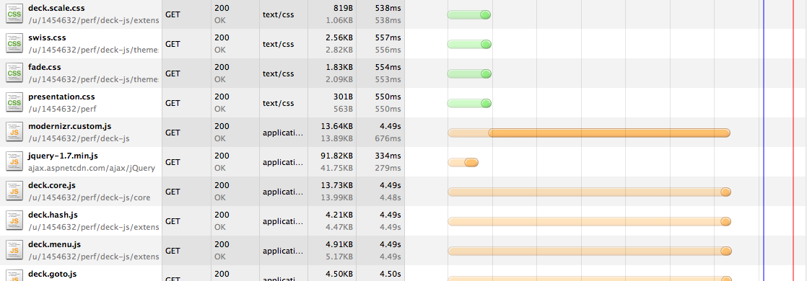
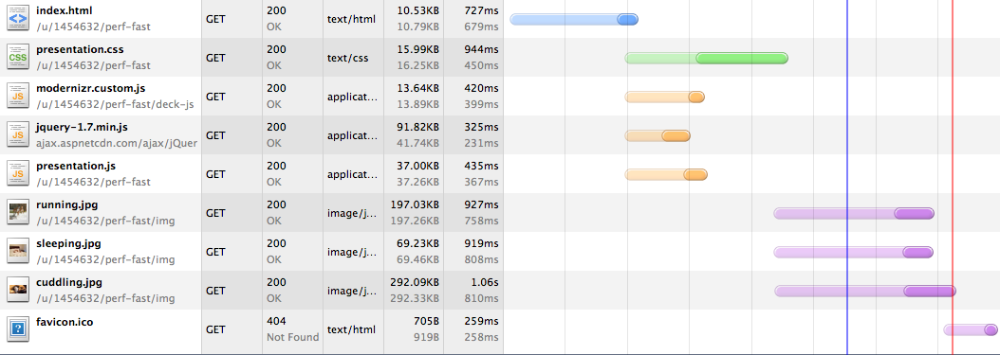

Make it Faster, Make it Badder, Make it Awesome
Ryan DeBeasi
Front-End Developer
352 Media Group
Atlanta HTML5, 4/19/2012 (Video)
What is performance?
We can measure the time it takes to...
- Generate & deliver just the HTML
- Deliver all files
- Get a useful page
- Respond to input
- Load new data
- Return to a page we've visited before
Why?
- Better Google rankings
- Higher conversion rate
- Users take it for granted
- Affects perceived quality
- Mobile - Limited resources, busy users
@mikeyk on performance
"Mobile experiences fill the gaps while we wait. Nobody wants to wait while they wait. Mobile needs to be fast."
- Instagram Cofounder Mike Kreiger, via LukeW
How?
What websites really do
Photo: Sage the dog
The Basics
- Minimize HTTP requests
- CSS at the top, scripts at the bottom
- @import makes puppies cry
- Shrink & consolidate files
- Minify & combine for text
- Sprites & smush.it for images
The Basics (continued)
- Enable gzip, and tell browsers to cache files
- Use a CDN
- Free CDNs for common libraries, fonts, etc.
- Use CSS3 instead of images where possible
- Support for old browsers comes with tradeoffs
- Watch out for FOUC before JavaScript runs
Essential Tools
- The Network panel in your browser’s dev tools
- YSlow or PageSpeed
- Slow connection simulator
- Fiddler (Windows)
- Network Link Conditioner (OS X Lion)
- Netem (Linux)
- Smartphone (hardware or emulator)
- Dropbox
- Public folder = quick-and-dirty hosting
Before
Not combined or minified: 6 seconds
(via Dropbox)

24 requests ❘ 686.86KB transferred ❘ 6.31s (onload: 6.20s, DOMContentLoaded: 5.73s)
After
Combined & Minified: 3 seconds!
(JS was combined but not minified because of semicolon funkiness)

9 requests ❘ 679.88KB transferred ❘ 2.99s (onload: 2.72s, DOMContentLoaded: 2.09s)
Next Steps
- Load JavaScript without blocking the page
- Some files really should be separate
- CSS has real but small impact: 20-50ms
- Social media widgets are huge
JavaScript/jQuery
- Use only what you really need
- Grab a custom build of Modernizr
- Get elements by ID where possible
- Consider a jQuery alternative like jqMobi or Zepto
- "Vanilla" JS is faster at the basics
- CSS transitions are smoother than jQuery.animate()
- Test using a site like jsPerf
Do This, Not That
Cache or chain selectors
Do this:
$('div.awesome').addClass('fun').show();
Not that:
$('div.awesome').addClass('fun');
$('div.awesome').show();
Do This, Not That
Provide Context (source)
Do this:
$('div.awesome').show();
Not that:
$('.awesome').show();
Server-Side Tips
- Minimize database queries
- WordPress Supercache
- Or, just generate static HTML (Jekyll)
- "There are two hard things in computer science: cache invalidation, naming things, and off-by-one errors." (source)
- Combine & Minify on the Server
- Use far-future expires headers & query strings
- When using JavaScript templating, prefill some data
The Future
<picture>
<source src="high-res.jpg" media="min-width: 800px" />
<source src="mobile.jpg" />
<!-- Fallback content: -->
<img src="mobile.jpg" />
</picture>
The Future (continued)
- WebSockets
- Meteor JS framework
- Keep a local copy of data on the client
- "Write your client code as if it were running on the server and had direct access to the database"
Questions?
I'd love to hear from you.
←
→
/
#